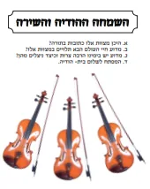
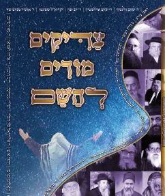

בעמוד זה (5)

שערי הודיה מדריך מעשי לחיי הודיה
מסלולים נהירים השוים לכל נפש בקיום מצות אהבת השי"ת על פי יסודות נאמנים מתורתם של חז"ל ומדבריהם המאירים של חכמי…
שערי אהבה
שערים מאירים לעולם הנפלא של אהבת ה’, על פי יסודות נאמנים מתורתם של חז”ל ומדבריהם של חכמי הדורות. הספר שערי אהב…

השמחה ההודיה והשירה
חשיבותה של ההודיה והכרת הטוב בתורה ידבר על מעלת ההודיה והכרת הטוב, שבזה תלוי חיי אדם ושלום ביתו. חוברת נחמדה מ…

צדיקים מודים להשם
סיפורים נפלאים על צדיקים שהודו להשם חוברת מלאה סיפורים מכל גדולי ישראל במשך הדורות כיצד הודו להשם בצורה נפלאה …

ספרי הודיה בקובץ PDF
להורדה בחינם גם זו לטובה - הרב מרגולין.pdf ויוסף עוד דוד - הרב יוסף בטיש הלוי תן תודה - הרב לוגסי.pdf ספר התוד…